技术作为实用工具，需求重于供给的一个实例¶
我花499找人上门安装OpenClaw，看到了AI时代最魔幻的一幕。
最近关于OpenClaw的事，除了我昨天说的Github登顶之外。
还有另一个非常魔幻的事。
就是OpenClaw收费上门安装。
一次费用，几百不等。
更离谱的价格也有，前段时间在群里看到的。
OpenClaw安装，1.6万。。。
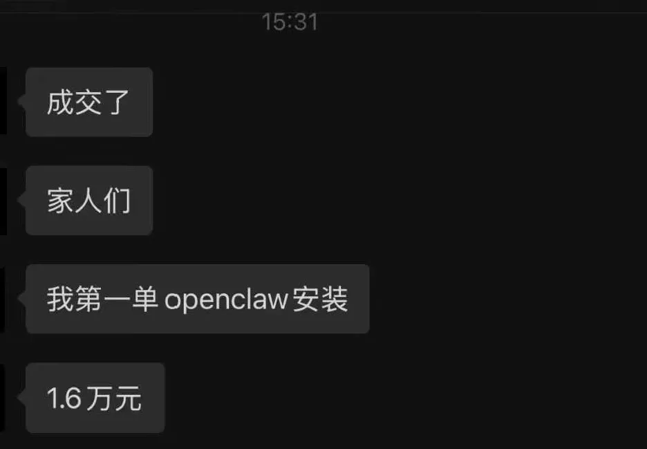
说保证没说谎，定金3k已经到账。
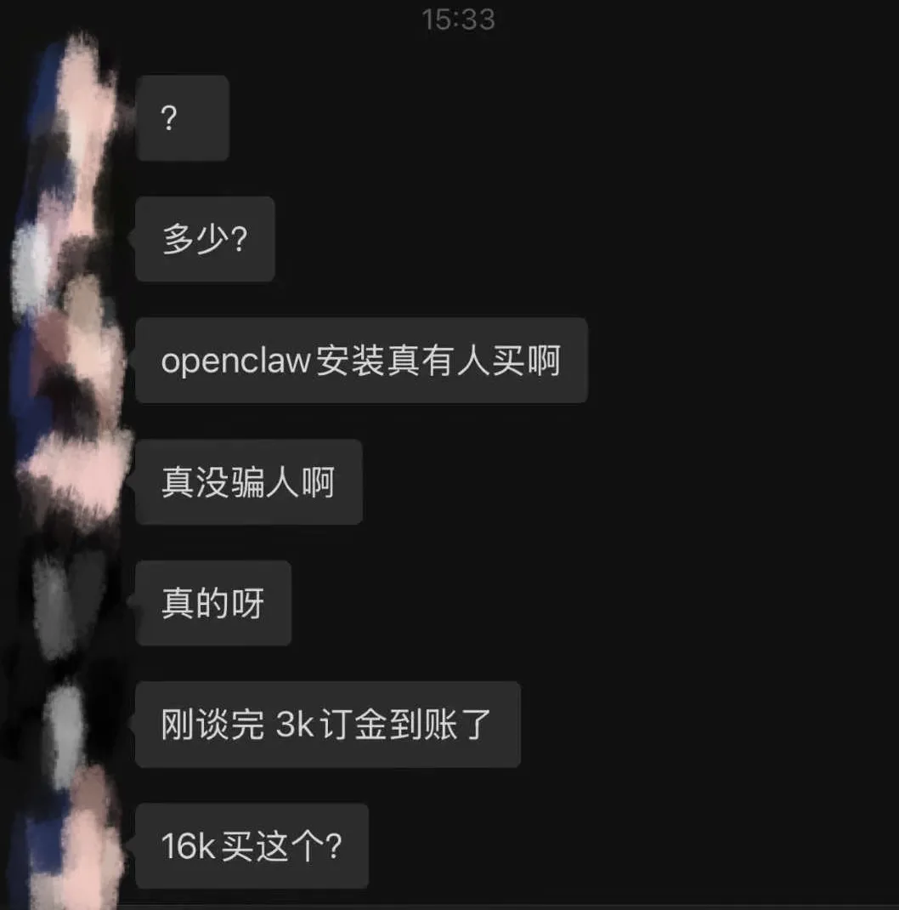
给我一下子整不会了，当然这个价格，绝对不可能是一个个人行为，我猜测大概率是要给某家公司批量安装+部分培训，才能出来的价格。
因为安装个OpenClaw，给1w6，我觉得还是有点过于离谱了。。。
我也去闲鱼和淘宝搜了搜。
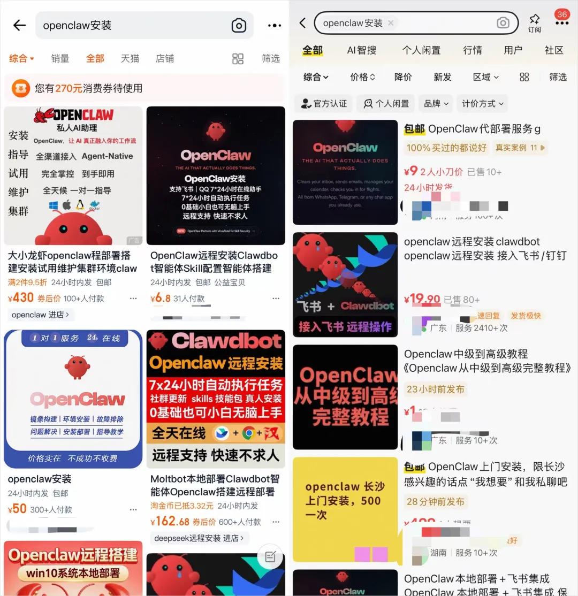
什么奇奇怪怪的价格都有。
但是很多低价引流的还是多，因为多数店铺并没有挂出实际的价格，所以我不得不挨个找客服去问。
我问了大概十几家，线上安装的价格从几十到几百不等，大多都在100~200之间。
最便宜的30就能部署。
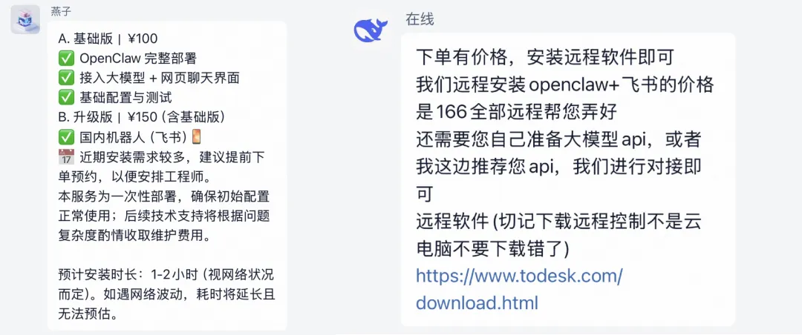
比较骚的事，我还找到了一家，DeepSeek官方店。。。
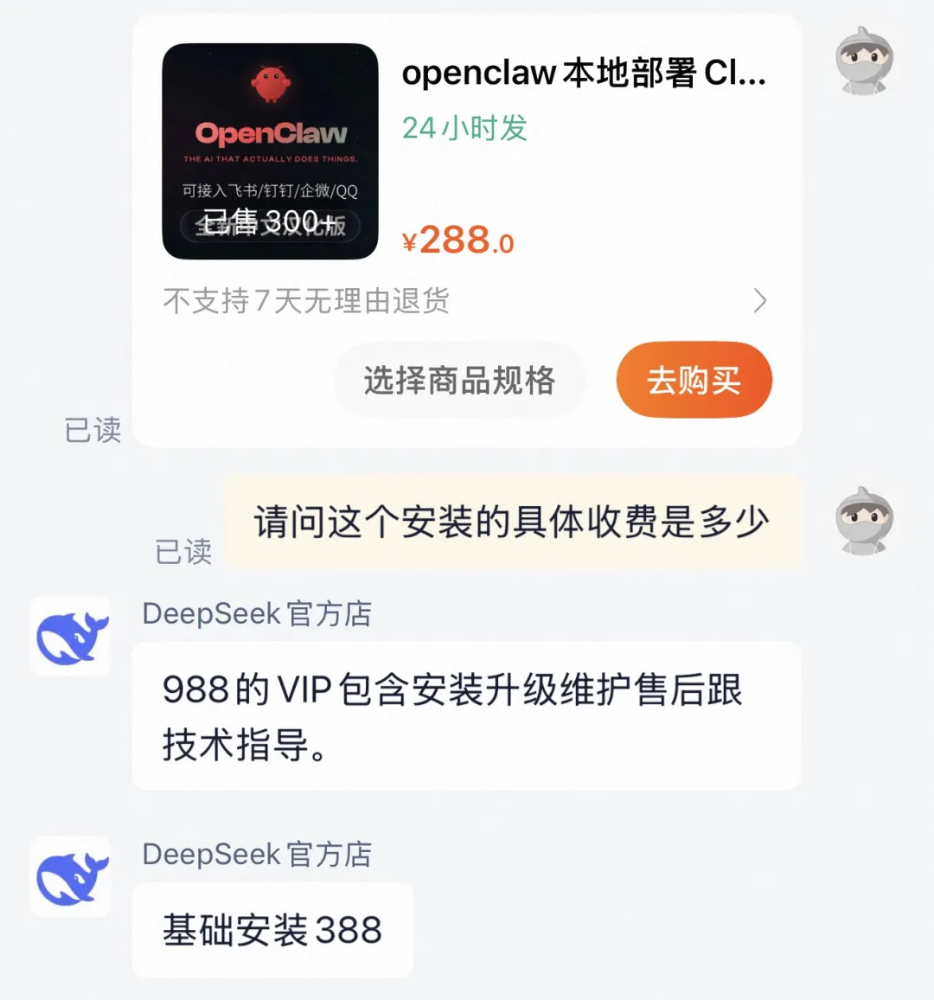
恩，DeepSeek官方店卖OpenClaw的部署，基础安装388，总感觉这店像是梁文锋他家二舅开的。。。
也不知道为啥，这些店铺，总是喜欢用DeepSeek1的头像，可能在广大的用户眼里。
这个鲸鱼，就代表着最前沿的科技AI。
而这些服务的区别呢，除了安装之外，有的还会提供接入飞书、钉钉，安装一些skills，别的其实也就没有了，比较贵的，就是包一个未来的所谓VIP的技术指导。
这些基本都是远程安装。
同城上门安装的收费会高一些，基本都在500左右。
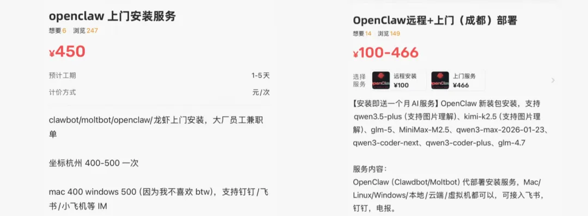
这块需要注意一下，我不是贬低这些业务，有需求就有市场，这个更正常。
至于一些微信的微商，那个价格就是我想骂的了。
感觉就是纯属来割的。
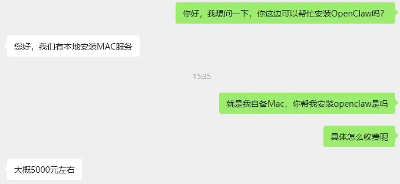
报了一个5000块的价格你敢信？？？
我家小龙虾是镀金的吗，安装一次要5000？？？
我甚至一度怀疑，这个上门，是不是真的上门给我安装小龙虾。
然后我就问了一下。
这一下给我更干懵了。
我那一瞬间，感觉是买了个黄仁勋亲自远程指导安装OpenClaw的服务。
真的，因为5000块钱，除了安装一下，没有任何其他服务，太牛逼了。。。
同样一个东西，收费从30到5000，你就能感受到，这个市场有多混乱了。
真的，让我想起了去年的同一时光。
上门安装DeepSeek一体机。
再结合着现在卖OpenClaw安装的，一大批全都是DeepSeek的头像，我非常有理由怀疑，这尼玛就是同一波人。
而且需求确实还挺旺盛。
小龙虾的热度我自己其实一直有一点错判，我觉得它2月中的时候，就应该往下走了，结果没想到，整个指数，还在不断的涨。
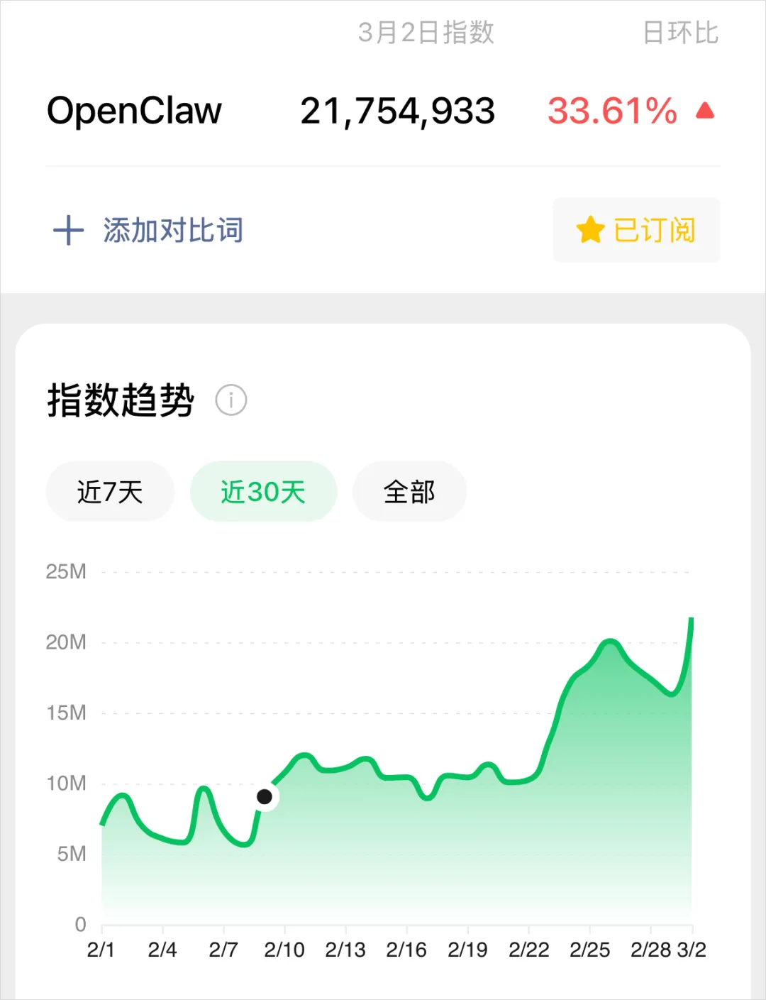
所以就导致，越来越多的人，需要小龙虾的安装服务。
淘宝上一个我搜到的OpenClaw的店铺，近7天有1万人搜索，5千人进入了店铺。
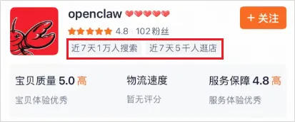
我没给它打码的原因是因为，他的店铺名，真的就叫OpenClaw。。。
这码打了感觉也没有啥意义。。。
当然，一切的调研，还是要躬身入局一下比较好。
所以，我让我们小朋友，废了九牛二虎之劲，把他们电脑上的OpenClaw给卸得干干净净，我保证奥特曼来了都看不出我们装过小龙虾的那种干净，甚至飞书机器人都从后台删了。
然后，让我们小朋友，在北京去找一个上门安装的服务，体验一下流程，再简单做一下调研。
因为我当时是西班牙时间，中午跟小朋友说的时候，国内已经是晚上了，所以他们找的也比较晚。
当天回复的只有7位。
其中呢，有4个是工作党，说只有周末和下班有时间，所以工作日白天来不了。
然后第5个，是一个大学生，收费是最低的，可以就是回消息晚了一点，我们已经选了另一个人了。
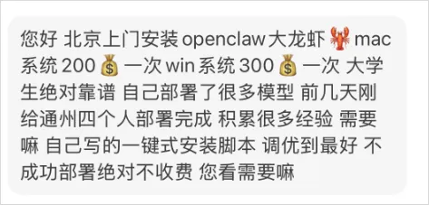
第6个，是在玩梗，浪费了我们宝贵的10秒钟。
而第7位，也就是我们最后选中的一位，真正上门的小哥。
收费499块钱，上门一趟，帮我们小朋友装上了OpenClaw，连上飞书和Github，并且说包第一个月的Token消耗，直接反手给我们买了个百炼上面Coding Plan的Lite套餐。
有图为证，我们是真的出了个大血，花了499块钱。
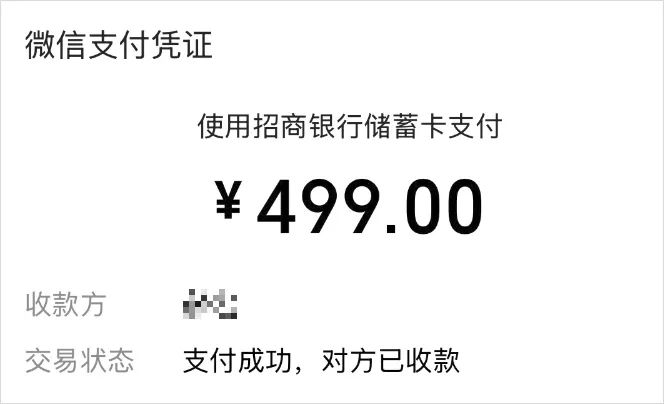
在这个小哥的安装过程，我们也跟他聊了聊，得到了一些信息。
这位小哥并不是技术出身，之前在互联网做运营。
他告诉我们说，他也是前两天刷到代装帖子之后，抱着试一试的心态在小红书上发了帖。
没想到，真的有很多人来问，这两天每天都在接活，平均每天好几单。
他也觉得很神奇，原来这东西真的有需求。
于是我们问了一下现在需要上门安装的大概的人群画像。
他说：“如果你是问行业的话，有影视，媒体，金融，还有互联网的朋友让我帮忙装。基本都是个人，但都背着工作的需求，想借助这波openclaw优化自己的业务流程。”
然后我们又问了下，那你知道流程是啥样的吗？或者他们拿来装了是做什么了咧。
他说，因为刚开始做，样本数量还不够。他也说不上来，只是说他有一个做电商的朋友，会用这个来帮他分析销售数据。
聊到这，我们又追问了一下他自己的使用情况，他的回答非常坦诚：
“其实我平时用它用的不多，我对它没什么需求。”
“平常最多的应该就是拿它给我定时推一下每天的AI新闻。”
哥们确实非常的坦诚。
我当时看到这些消息的时候，我当时脑海里，就想到了爱情公寓里面的一句台词。
“给你们上就业指导课的老师，有可能他们自己从来都没有就业过。”
帮你装OpenClaw的师傅，可能自己也不怎么用OpenClaw。。。
但是想一想，这确实也是一个很正常的现象。
毕竟会装OpenClaw，真的不需要你会用OpenClaw。。。
这真的是一个很魔幻的现象。
所以其实大家看到这，也能知道，这玩意其实根本没啥学习成本，你自己研究一下，学习一下，很快就能搞定了。
真的，能自己研究一下安装，就自己研究一下，网上教程实在太多太多了，不行就在我我公众号上看一下安装教程，全都有。
我强调这个，除了帮你省钱之外，还有一个现在绝大数人，都根本没注意到、也不在乎的。
安全。
我在昨天的OpenClaw登顶的短文里，写过一段话，被挺多人划了线。
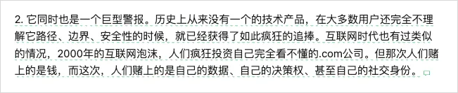
类OpenClaw这样的产品，为啥很多大厂不做，比如字节、比如OpenAI、比如Claude、比如Google，难道真的因为有技术壁垒吗？
有个屁的技术壁垒，都是开源的、且vibe coding的项目，大家去Github上搜搜有多少复刻的就知道了。
大厂不做的一个很大的原因，是怂，是不敢。
因为小龙虾，是直接拿了你系统的最高权限，几乎可以代替你干任何事情，而且自己还能联网，安全做的也是一坨屎，你放在一个新的mac mini上跑还好，你要是放在一个你自己的电脑上，一旦装了一些奇怪的插件或者Skills偷你个API Key，或者把端口开到公网又没鉴权，你知道这是多大的安全隐患吗。
就像这个网站，上门全部是因为各种原因，被泄露出来的小龙虾。
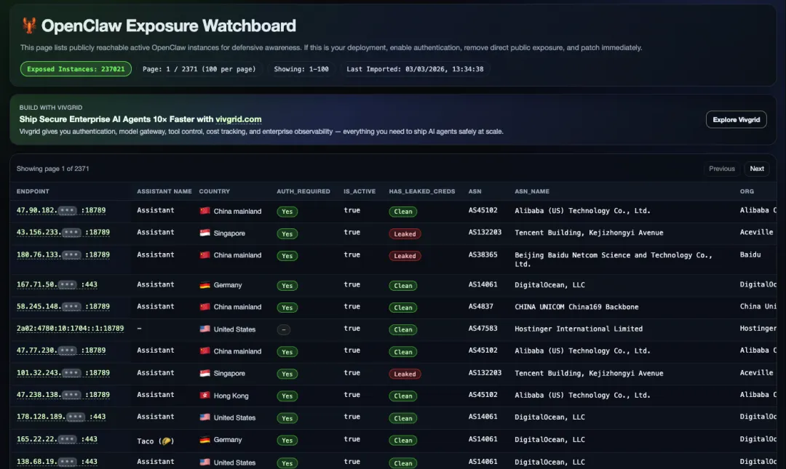
清一色全是默认端口。
东西泄的一干二净，还自带系统最高权限。
说真的，很多做灰产的，看到这都笑开了花，这辈子就没打过这么富裕的战，有一个赛一个，全特么是天选肉鸡。
不知道肉鸡是啥的，可以自己去搜索一下，或者问问AI。
所以大厂没一个敢做的，因为这个安全问题太难解决了，你像Claude Code，已经很牛逼了，但是还有一些事情不能干。
比如，你用远程控制的时候，你完全可以让它找到你本地里面的任何一个文件，但是它只能给你返回路径，你让他给你这个文件的下载链接，让你在手机上就可以下载，这是万万不可能的，除非你自己魔改。
回到上门安装OpenClaw这块，这块的安全风险，就真的更大了。
因为你完全无法知道，对方到底给你装的是个什么东西。
真的是原版的没有装任何后门的小龙虾吗？或者给你装的小龙虾里，没有装任何一个有后门的Skills吗？
真的给你装了，你能发现吗？
我相信，绝大多数的人，都完全发现不了。
世界已经这么不安全了，不要把自己的命，交到他人手上。
安全，安全，还是他妈的安全。
坦诚的讲，我知道很多很多的人，现在有一种恐惧。
那种被时代甩掉的恐惧，我自己也有。
我害怕新的工具一个接一个地冒出来，自己永远在追赶却永远追不上。
害怕某天醒来发现，自己花了十几年积累的经验和技能，突然变得一文不值了。
这种恐惧是非常私密的，它不会出现在任何一篇鸡汤文里，也不会出现在任何一个大佬的年终总结里，但它就在那里，在每一个夜深人静的时刻。
所以当一个新工具出来的时候，很多很多人争先恐后地去安装它，他们可能还不知道这个工具能干什么，但是，如果你不装，你就落后了。如果你落后了，你就完了。
然后呢，很多的结局，其实就像买了kindle，下了一百本书，然后就再也没打开过。办了健身卡，去了两次之后就变成了月供。报了线上课程，囤了一堆知识付费产品，然后永远停在第一节课。
没必要，真的。
1880年代，电力开始在美国普及，当时很多工厂主花大价钱买了发电机和电动机，装在自己的工厂里。但是装完之后，很多人发现生产效率并没有显著提升。
因为他们只是用电动机替代了蒸汽机，但整个工厂的布局、流程、管理方式都没有变。
真正的效率提升，发生在二三十年之后。新一代的工厂管理者意识到，电力不仅仅是一种新的动力来源，它应该重新定义整个生产流程。
于是，工厂从垂直布局变成了水平布局，从中央驱动变成了分散驱动，从刚性生产线变成了柔性生产线。
那些真正吃到电力红利的人，其实是最早想明白，电力到底意味着什么的那波人。
AI也是一样。
现在这个阶段，其实就挺像1880年。
大家都在疯狂地安装，疯狂地买设备，疯狂地囤工具。但大多数人做的事情，只是用AI替代了原来手动做的事。用AI写原来手写的稿子，用AI做原来手画的表格，用AI查原来手搜的信息。
这当然也有用，但这不是AI真正的威力。
AI真正的威力，是让你重新思考"这件事到底应不应该做"，而不仅仅是"这件事怎么做得更快"。
但重新思考这件事，是最难的。
它需要你停下来，需要你跳出惯性，需要你承认自己可能一直在做错误的事情。
所以说，这个时候，你其实完全可以想一想，你真的需要OpenClaw吗？
坦诚的讲，当过了那个甜蜜期之后，我用的越来越少了。
我至今时长消耗最多的两个Agent产品，依然还是：
Claude Code和Codex。
在公司内部，我也并没有强推让大家全员使用OpenClaw。
但是Claude Code和Codex，是我强行去推的，任选其一，但是必须都用，所以现在，几乎每个职位，都拥有了自己把业务痛点自行进行开发解决的能力。
连HR都按照我们一些离奇的需求，手搓了一个AI初筛简历进行评分的产品。
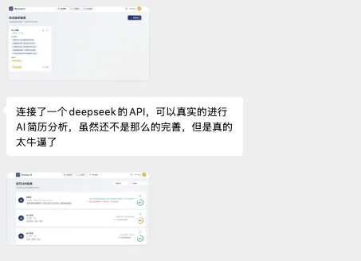
当然，我说这些，并不是我不推荐OpenClaw，他是一个很好的产品，虽然工程实现上有些地方比较离谱，Token的消耗量上也极度爆炸，但是我们公司很多小伙伴也依然在用，我们这两天可能还会发个关于OpenClaw的很有趣的开发教程。
我想说的是，这个时代，进化过于迅猛了。
人人都有恐惧，我见过的人中，咖位越大的大佬，他反而越恐惧。
好奇心和恐惧，可能是同一枚硬币的两面。
好奇心驱使我们走向未知，恐惧驱使我们不敢停在原地，两种力量合在一起，就构成了人类文明的全部动力。
但，不要因为恐惧，就让渡了自己思考的权利。
甚至，让渡了自己的安全。
多花一点点时间，自己去研究一下。
这个过程，可能是AI时代。
比学会使用一个工具更重要的事。
以上，既然看到这里了，如果觉得不错，随手点个赞、在看、转发三连吧，如果想第一时间收到推送，也可以给我个星标⭐～谢谢你看我的文章，我们，下次再见。
/ 作者：卡兹克、Tashi
/ 投稿或爆料，请联系邮箱：wzglyay@virxact.com
由上述内容思考一个问题：时至 2020s，在绝大多数人都还不会使用几十年前就存在的 Excel 的高级功能和安装 Windows 操作系统的情况下，这些安装 OpenClaw 的“普通人”又该如何理解这个软件的基础原理？如果不理解基础原理，那么花费高溢价使用该工具和由此衍生出的安全问题就可以归类为“盲目跟风”且需要承担相应后果。
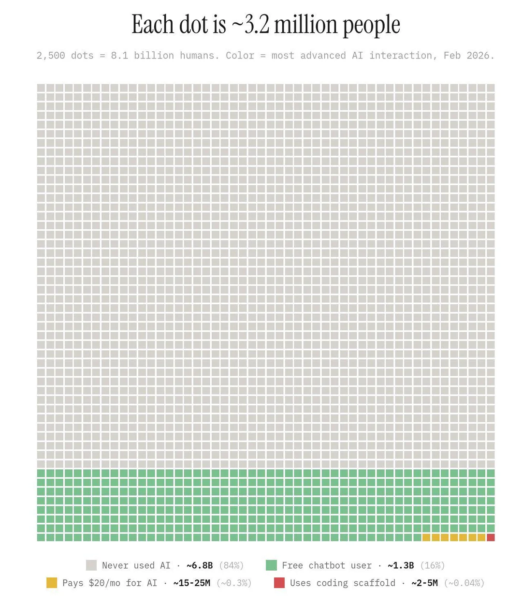
上面这张图统计的数据可能不会非常精确，但在规模上是可以作为参考。以 OpenClaw 和 Manus（在 2025 炒作的软件，现在团队已经被 Meta 收购，该产品在原理上与 OpenClaw 没有区别）为代表的新工具，实际上是为那些使用诸如此前提到的 Excel 高级功能等已经不能满足需求的群体所服务的，该群体对于这种新工具所能提供的价值和带来的风险都有更加清晰的认识。
由于媒体舆论炒作本轮由 LLM 驱动的 AI 周期的力度太大，导致“恐慌”充满了职场。恰逢全球经济进入动荡期，越来越多的公司利用 AI 工具开始裁员以达到“降本增效”的目的，又给相关 AI 工具的炒作火上浇油。但从原理看，当前以 LLM 为底层架构的 AI 工具依然存在极大的局限性，在非结构化系统任务、视觉、人形机器人等领域的应用依然存在不可逾越的鸿沟，因此无需相信和传播这种“恐慌”。
从产品的角度出发，如果没有需求而存在大量供给，这种产品的情绪价值可能更大于实用价值。但对于 OpenClaw 这种明显需要实用价值的工具，最佳的使用时机就是此时恰好存在一个强有力的需求，且除此类工具以外传统工具的效率显著低于这类新工具，在此切入将会是真正体现工具“杠杆效应”的绝佳时机。
2026.3.11